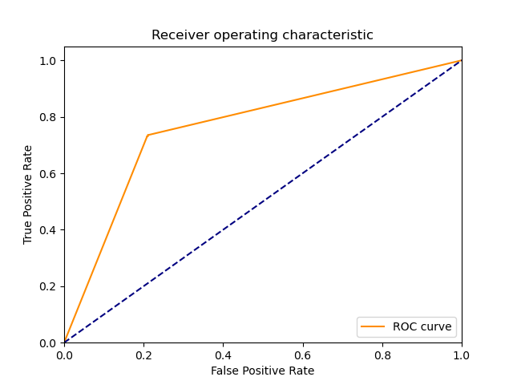

| 1 |
RealBoost |
An RealBoost classifier |
7268.674560 |
0.115704 |
314 |
347 |
28 |
61 |
0.837333 |
0.925333 |
0.918129 |
0.881333 |
0.118667 |
0.875872 |
1.636845 |
0.000120 |
7.569962 |
 |
|
 |
| 0 |
DiscreteNBC |
DiscreteNBC |
1389.321879 |
763.487018 |
283 |
319 |
56 |
92 |
0.754667 |
0.850667 |
0.834808 |
0.802667 |
0.197333 |
0.792717 |
1.227396 |
0.000571 |
0.001038 |
 |
 |
|
| 3 |
ComplementNBC |
The Complement Naive Bayes classifier described in Rennie et al |
13.174975 |
0.609618 |
288 |
298 |
77 |
87 |
0.768000 |
0.794667 |
0.789041 |
0.781333 |
0.218667 |
0.778378 |
1.159810 |
0.059080 |
1.276830 |
 |
 |
 |
| 4 |
GaussianNBC |
Gaussian Naive Bayes (GaussianNB) |
10.179087 |
4.560344 |
274 |
297 |
78 |
101 |
0.730667 |
0.792000 |
0.778409 |
0.761333 |
0.238667 |
0.753783 |
1.102127 |
0.074052 |
0.165291 |
 |
 |
 |
| 2 |
BernoulliNBC |
Naive Bayes classifier for multivariate Bernoulli models |
14.719764 |
1.396310 |
307 |
210 |
165 |
68 |
0.818667 |
0.560000 |
0.650424 |
0.689333 |
0.310667 |
0.724911 |
0.956187 |
0.049247 |
0.519162 |
|
 |
 |
{kind=link}
{kind=link}
{kind=link}
{kind=link}